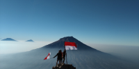

Kerja sama bertujuan untuk mengembangkan suatu hubungan yang baik antara satu pihak dan pihak lain. Untuk mencapai hal tersebut, tentunya setiap kerja sama yang dilakukan harus bersifat saling menguntungkan. Jika sebuah kerja sama yang baik terwujud, maka akan memberikan dampak positif bagi kedua belah pihak. Beberapa diantaranya seperti mengembangkan bidang perekonomian negara, menambah ilmu pengetahuan dari negara maju, mampu mencukupi kebutuhan bahan pokok negara melalui impor, membuka lapangan pekerjaan, serta terlibat dalam bentuk pelestarian budaya negara.
Salah satu dampak positif yang didapatkan oleh NKRI dari kerja sama secara global adalah meningkatkan keuangan negara, salah satunya melalui dana pinjaman dari negara-negara lain untuk membangun tanah air. Selain itu, kerja sama internasional juga dapat mendorong daya saing dengan negara lain, memberikan peluang untuk masyarakat sehingga bisa berinvestasi (ini membuka lapangan kerja baru), juga menambah jumlah devisa negara dari kegiatan ekspor. Jika kegiatan ekspor sukses, maka negara juga akan semakin maju dan kuat dalam perdagangan.
Menurut saya, dengan adanya kerja sama dunia, kebutuhan rakyat Indonesia dapat lebih terpenuhi, misalnya dengan impor bahan pokok (seperti beras) dan pembangunan infrastruktur (MRT, kereta cepat) yang dibantu negara lain. Selain itu, kualitas SDM Indonesia juga meningkat misalnya dengan program beasiswa ke Singapura, Jerman, Amerika Serikat, dan lainnya. Rakyat juga berkesempatan mengenal budaya luar dengan adanya program pertukaran pelajar.